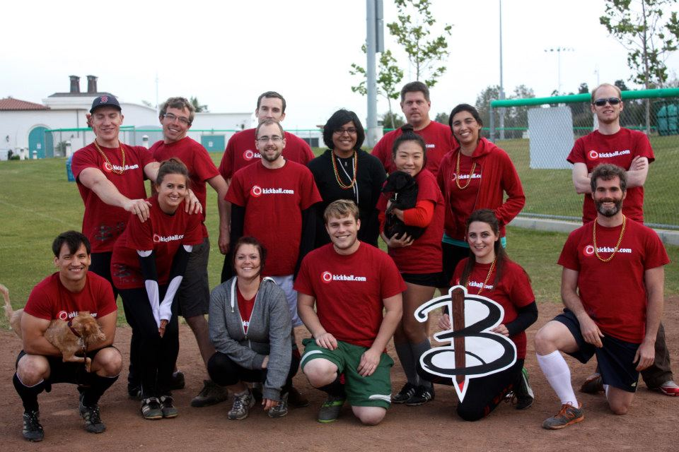
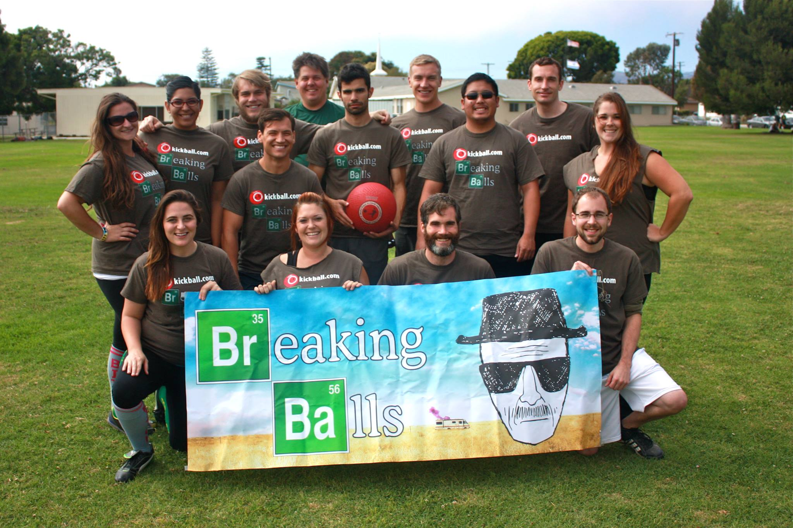
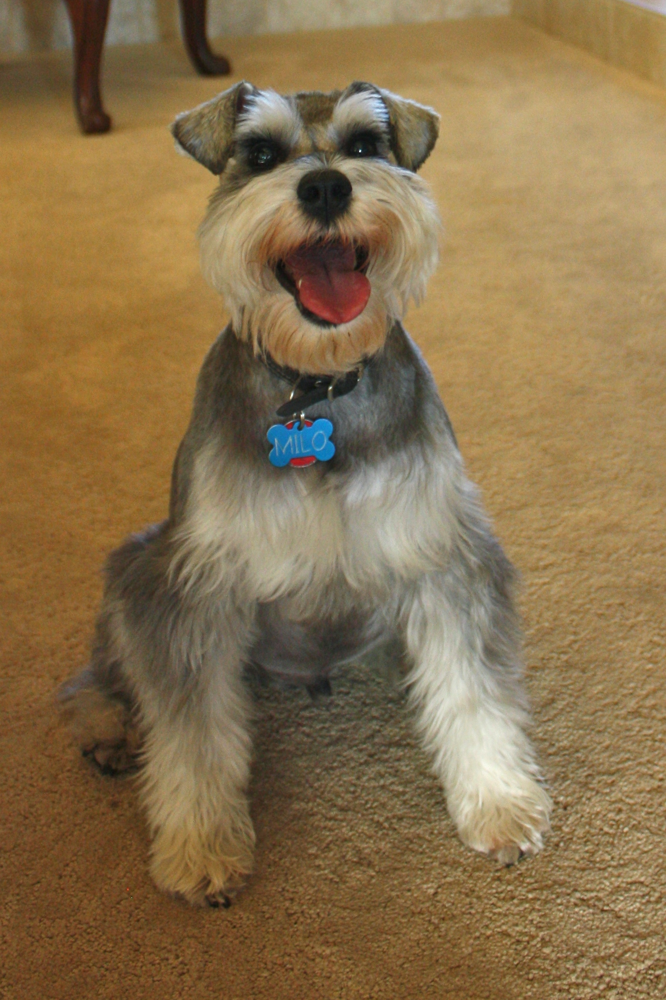
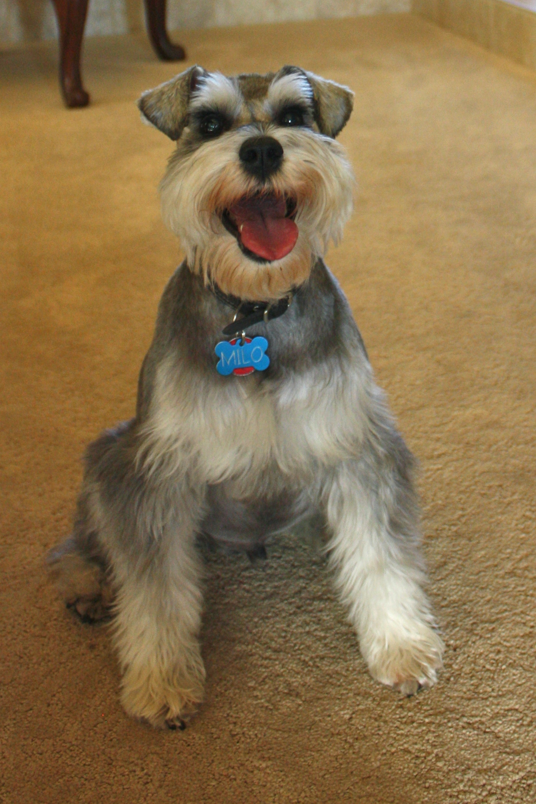

24 year old gal living in Southern California not too far from the beach that enjoys spending time with her family, the boyfriend, her friends and her dogs.
Her Quirk
Brittany's quirk is that she is extremely unathletic and captained two kickball teams (named Buffy the Ball Slayer and Breaking Balls after a couple of shows she enjoys).
 Her Loves
Brittany's most adorable loves ever are her dog friends, Benson and Milo (Benson's the black one and Milo's the grey one).
 

Here's some Hippie Ipsum for you
Awareness didgeridoo sound healing, saturn return om. Equinox third eye flax seed crackers, ganesh native american ancestry. Mendo dreamwork as we honor, enneagram tantra fertility awareness discovering valuable truths kefir transformative. Lucid dreaming jasmine float tank radical acceptance spinal awareness, visualization practices mala beads embodied. Downward dog gestalt radiant, free tibet mystic. Namaste.


© 2013 Brittany Mazza. All Rights Reserved.